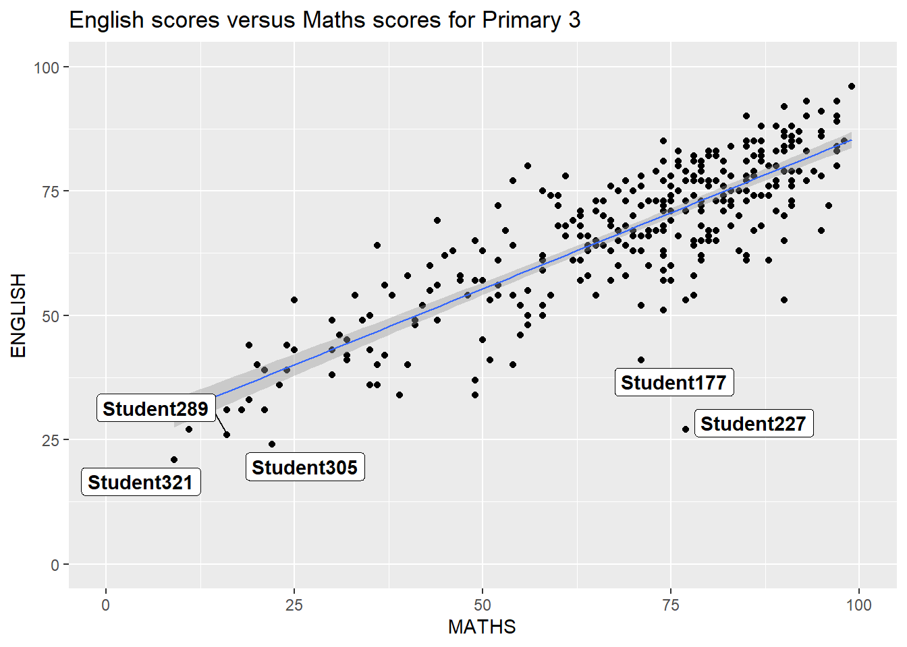
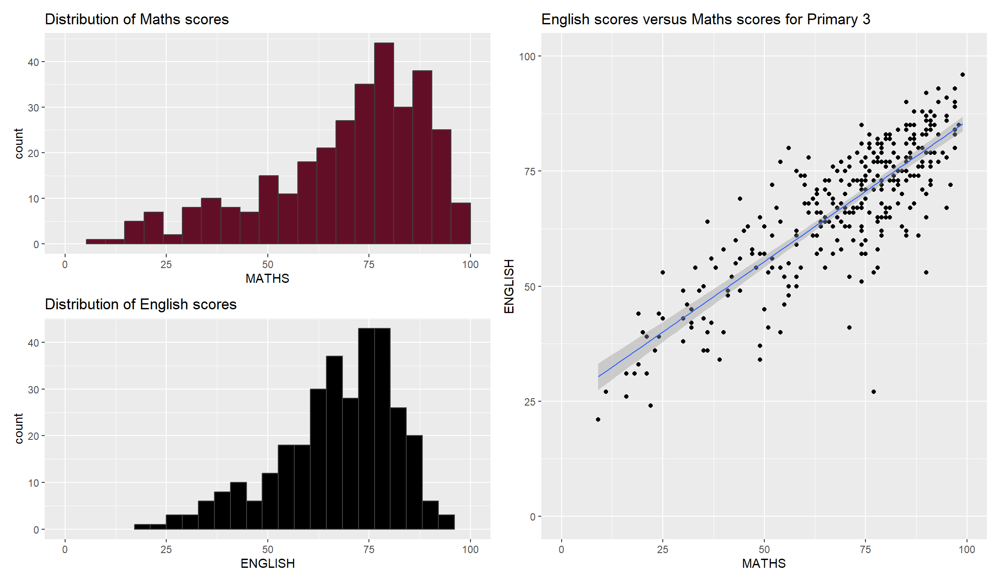

Code
pacman::p_load(ggrepel, patchwork, ggthemes, hrbrthemes, tidyverse)There are several ggplot2 extensions for creating more elegant and effective statistical graphics. Let’s explore these features!
Besides tidyverse, four R packages will be used.
ggrepel: to provide geoms for ggplot2 to repel overlapping text labels
ggthemes: to provide extra themes, geoms, and scales for ‘ggplot2’
hrbrthemes: for typography-centric themes and theme components for ggplot2
patchwork: for preparing composite figure created using ggplot2
To check if these packages have been installed and to load them into your working R environment, run the code below.
pacman::p_load(ggrepel, patchwork, ggthemes, hrbrthemes, tidyverse)The code chunk below imports exam_data.csv into R environment by using read_csv() function of readr package.
exam_data <- read_csv("Exam_data.csv")
show_col_types = FALSE
knitr::kable(head(exam_data))| ID | CLASS | GENDER | RACE | ENGLISH | MATHS | SCIENCE |
|---|---|---|---|---|---|---|
| Student321 | 3I | Male | Malay | 21 | 9 | 15 |
| Student305 | 3I | Female | Malay | 24 | 22 | 16 |
| Student289 | 3H | Male | Chinese | 26 | 16 | 16 |
| Student227 | 3F | Male | Chinese | 27 | 77 | 31 |
| Student318 | 3I | Male | Malay | 27 | 11 | 25 |
| Student306 | 3I | Female | Malay | 31 | 16 | 16 |
One of the challenge in plotting statistical graph is annotation, especially with large number of data points. Take a look below and see it for yourself.
ggplot(data=exam_data,
aes(x= MATHS,
y=ENGLISH)) +
geom_point() +
geom_smooth(method=lm,
size=0.5) +
geom_label(aes(label = ID),
hjust = .5,
vjust = -.5) +
coord_cartesian(xlim=c(0,100),
ylim=c(0,100)) +
ggtitle("English scores versus Maths scores for Primary 3")
knitr::opts_chunk$set(warning = FALSE)ggrepel is an extension of ggplot2 package which provides geoms for ggplot2 to repel overlapping text.
ggplot(data=exam_data,
aes(x= MATHS,
y=ENGLISH)) +
geom_point() +
geom_smooth(method=lm,
size=0.5) +
geom_label_repel(aes(label = ID),
fontface = "bold") +
coord_cartesian(xlim=c(0,100),
ylim=c(0,100)) +
ggtitle("English scores versus Maths scores for Primary 3")
knitr::opts_chunk$set(warning = FALSE)ggplot2 comes with eight built-in themes, they are: theme_gray(), theme_bw(), theme_classic(), theme_dark(), theme_light(), theme_linedraw(), theme_minimal(), and theme_void().
ggplot(data=exam_data,
aes(x = MATHS)) +
geom_histogram(bins=20,
boundary = 100,
color="grey25",
fill="#630e27") +
theme_dark() +
ggtitle("Distribution of Maths Scores") knitr::opts_chunk$set(warning = FALSE)ggplot(data=exam_data,
aes(x = MATHS)) +
geom_histogram(bins=20,
boundary = 100,
color="grey25",
fill="#630e27") +
ggtitle("Distribution of Maths scores") +
theme_ipsum()knitr::opts_chunk$set(warning = FALSE)Let’s create three graphs named p1, p2 and p3.
p1 <- ggplot(data=exam_data,
aes(x = MATHS)) +
geom_histogram(bins=20,
boundary = 100,
color="grey25",
fill="#630e27") +
coord_cartesian(xlim=c(0,100)) +
ggtitle("Distribution of Maths scores")
knitr::opts_chunk$set(warning = FALSE)p2 <- ggplot(data=exam_data,
aes(x = ENGLISH)) +
geom_histogram(bins=20,
boundary = 100,
color="grey25",
fill="black") +
coord_cartesian(xlim=c(0,100)) +
ggtitle("Distribution of English scores")
knitr::opts_chunk$set(warning = FALSE)p3 <- ggplot(data=exam_data,
aes(x= MATHS,
y=ENGLISH)) +
geom_point() +
geom_smooth(method=lm,
size=0.5) +
coord_cartesian(xlim=c(0,100),
ylim=c(0,100)) +
ggtitle("English scores versus Maths scores for Primary 3")
knitr::opts_chunk$set(warning = FALSE)Patchwork is a ggplot2 extension designed to combine separate ggplot2 graphs into a single figure. Here’s the syntax.
“/” operator to stack two ggplot2 graphs
“|” operator to place the plots beside each other
“()” operator the define the sequence of the plotting
p1 + p2(p1 / p2) | p3patchwork <- (p1 / p2) | p3
patchwork
p3 <- ggplot(data=exam_data,
aes(x= MATHS,
y=ENGLISH)) +
geom_point() +
geom_smooth(method=lm,
size=0.5) +
coord_cartesian(xlim=c(0,100),
ylim=c(0,100)) +
ggtitle(stringr::str_wrap("English scores versus Maths scores for Primary 3", width = 30)) +
theme_wsj() +
theme(plot.title = element_text(hjust = 0.5, size = 15, face = "bold"))